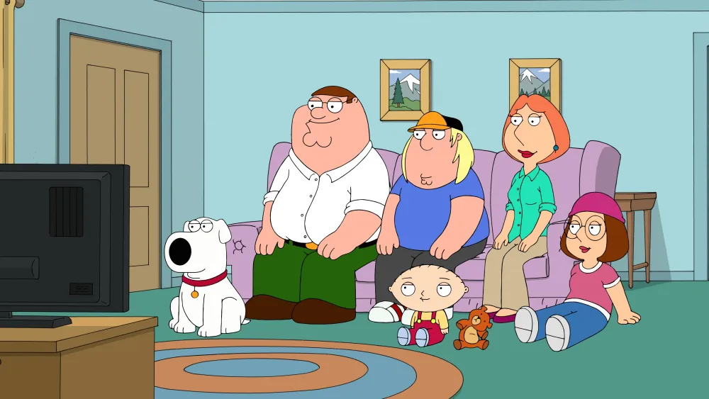

This is my Family Guy Fanpage
I have been watching Family Guy since I was in middle school and the show would run on Adult Swim. Now, I am 21 years old and I watch Family Guy every day. I watch the show when I am bored, doing my makeup, eating, and trying to fall asleep. I even did my senior seminar research study on political satire in Family Guy. Family guy is my favorite show.
My two favorite characters and Stewie and Brian. They bring out the best in eachother. They always participate in crazy antics like trying to save Christmas or visiting Ann Murray's house. Stewie and Brian represent true friendship.
My favorite episode is S9E1: "And Then There Were Fewer". This episode is a parody of the novel "And Then There Were None" by Agatha Christie. This episode brings together many characters that we do not usually get to see in the same scenes. The episode is entertaining and mysterious, yet it is still hilarious.